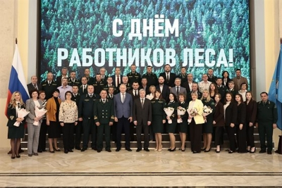
В преддверии Дня работника леса Алексей Русских наградил выдающихся представителей отрасли
Торжественное мероприятие состоялось 16 сентября в доме правительства Ульяновской области.…
НовостьПо данным источника
По сообщению «Известий», ведомство применяет автоматическую сверку счетов-фактур, данные онлайн-касс и систем маркировки товаров. В зону повышенного внимания попали предприятия общественного питания.…

Торжественное мероприятие состоялось 16 сентября в доме правительства Ульяновской области.…

Для граждан нашей братской республики эта дата стала символом национального возрождения, восстановления исторической справедливости и консолидации общества на основе единых ценностей.……
«Узган атнада Нью-Делига сәфәр барышында миңа һәм Россия делегациясенә җылы, ачык йөз белән каршы алуыгыз һәм кунакчыл булуыгыз өчен рәхмәт белдерәсем килә.…
Постоянная ссылка на это сообщение: https://kumiakk.ru/?p=20229 Сетевое издание «күмәк көч» ("Общая сила").…
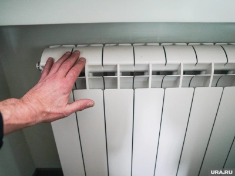
Однако единой даты для пуска тепла во всем городе в нем нет: первыми по традиции начнут греть социальные объекты.…
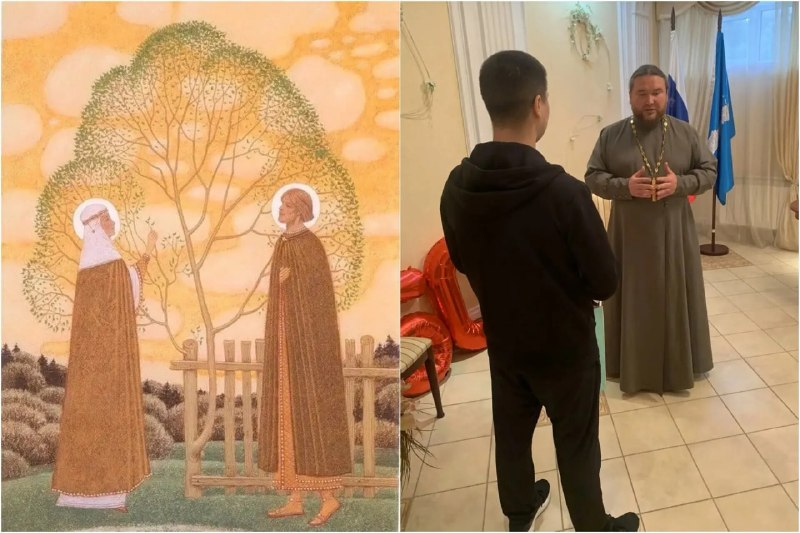
В молодой семье появился первенец — мальчика назвали Михаилом.…
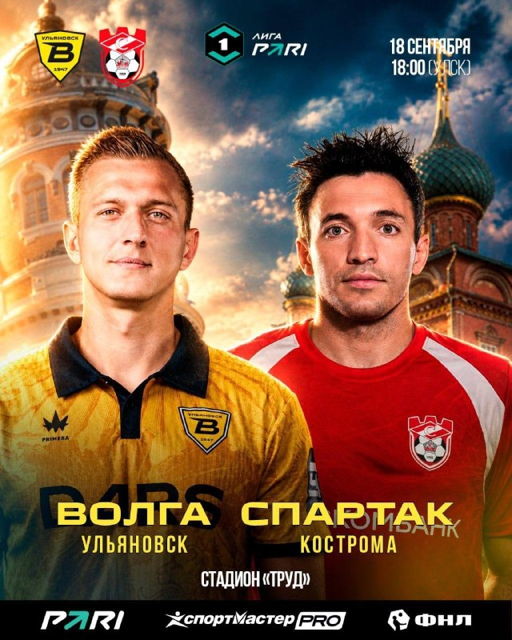

Обновляем проезды, тротуары, ливневки, заездные карманы, площадки под мусорные контейнеры.…
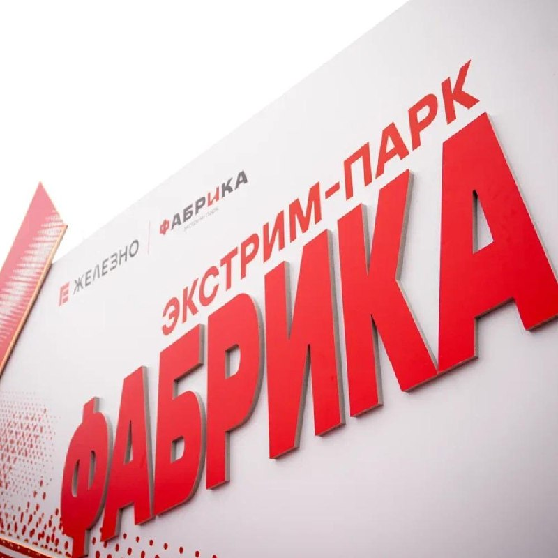
А посмотреть было на что: показательные выступления, трюки и первые шаги юных спортсменов на территории крупнейшего экстрим-парка Ульяновска.…

Фриц Ланг Октябрь 1 октября, 18.30 – Сёрфер , реж. Лоркан Финнеган 7 октября, 19.00 – Омерзительная восьмёрка , реж.…

Для участия необходимы регистрация и медицинский допуск.
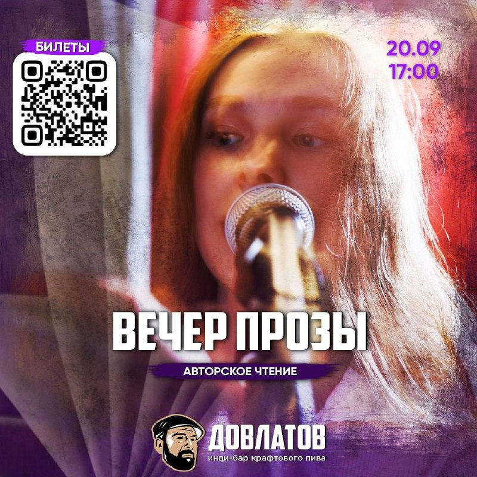
Короткие и не очень рассказы разного направления: провинциальная чернуха, драмы про одиночество, юмористические истории, абсурд и реализм — всё, что угодно, но главное — хорошо!…
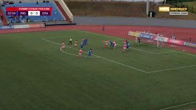
И, что самое удивительное, «Спартак» с таких аутов довольно регулярно забивает! Пропустит ли «Волга» акробатический гол?…

Первая встреча будет посвящена поэзии перестройки (вторая половина 1980-х — начало 1990-х годов). Тема встречи — перемены и застой.…
В перечень входят пенсионные льготы, ежемесячные выплаты, в том числе на детей, обеспечение средствами реабилитации и программы восстановления.…

Главный старт пройдёт на биатлонном комплексе УлГУ «Заря». Регистрация на месте — с 9:00, церемония открытия — в 11:30, старт забегов — в 12:00.…
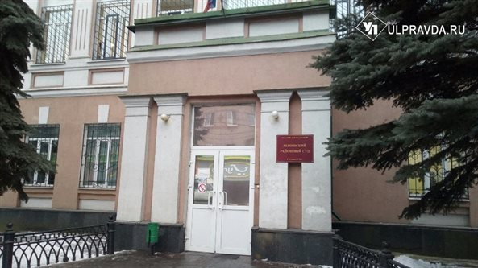

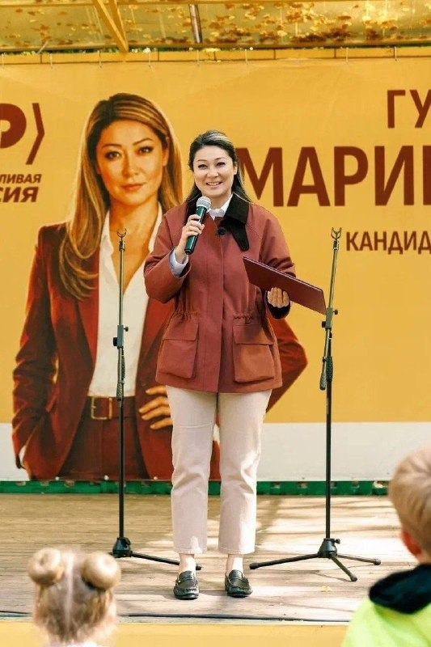
На фотографии с визита в регион углядели кожаные пенни-лоферы от Saint Laurent за 150 тысяч рублей.…
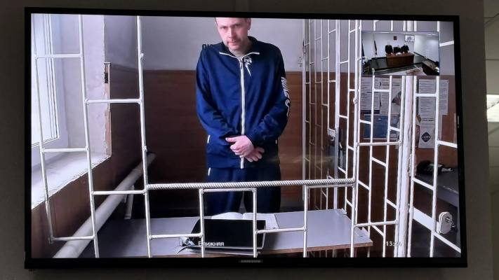
Масштабный судебный процесс по делу о срыве нацпроекта в Барыше завершился предсказуемо.

Оставить обращение можно по телефону +7 (8422) 58-00-08 С 18 по 20 сентября состоятся выборы депутатов Государственной Думы IX созыва.…

В центре внимания оказались развитие промышленности, кадровый потенциал, модернизация общественного транспорта и ЖКХ, реализация нацпроектов в сфере образования и личный взгляд парламентария на будущее региона.…
Под угрозой ликвидации оказались бренд с 10-летней историей, полтора десятка клубов и перспективы тысячи бойцов.…
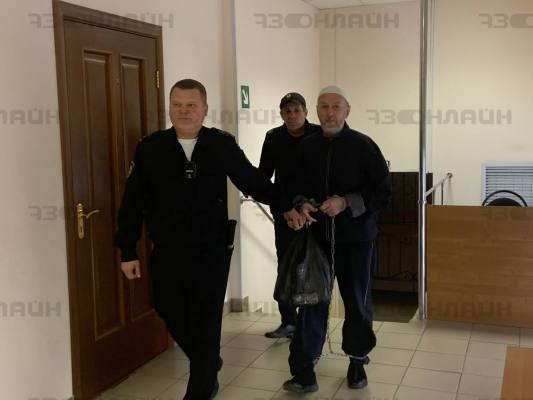
Четверть века спустя криминального авторитета, уже отбывающего пожизненный срок, доставили из хабаровской колонии в местный изолятор, чтобы судить за убийство администратора Центрального рынка Михаила Мартынова .…
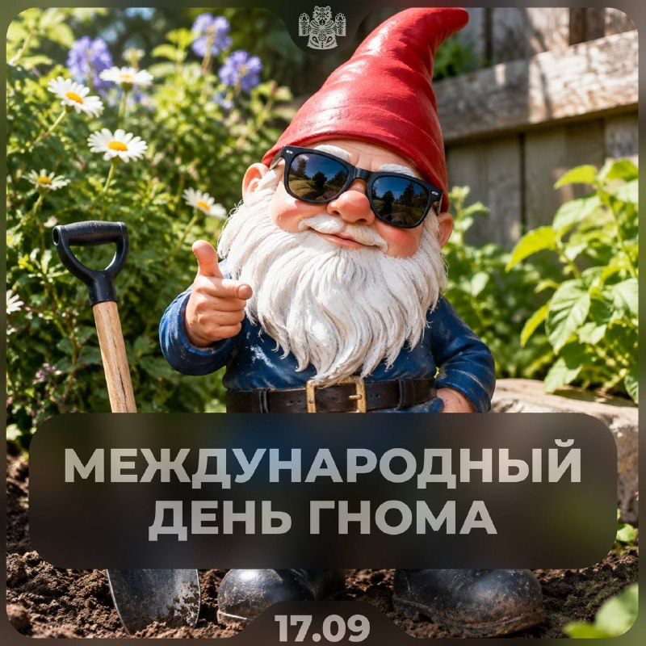
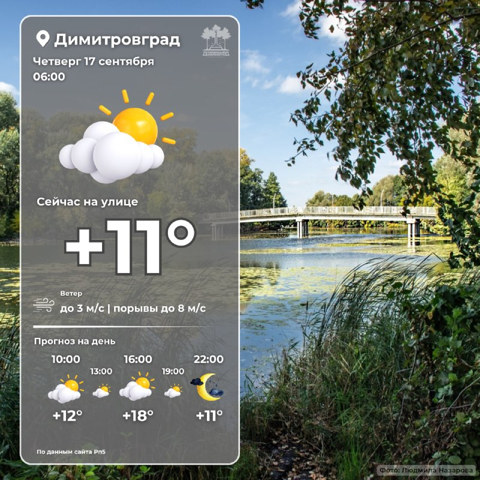
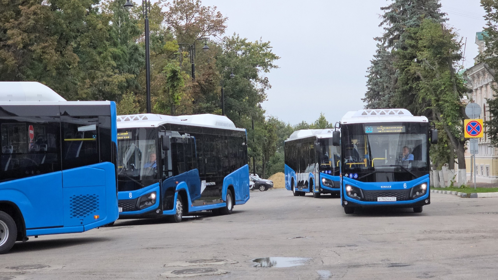
Ульяновцы пожаловались на плохую работу городского маршрута №84. В нынешнем году его передали от частника в ПАТП-1 и перевели на регулируемый тариф.…
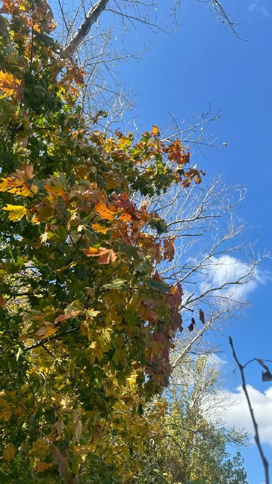

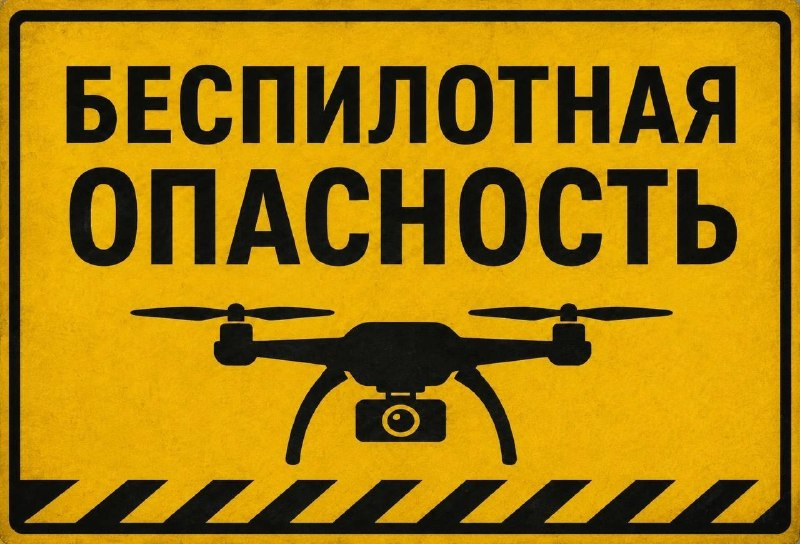
Подписывайтесь, чтобы не пропустить важное!
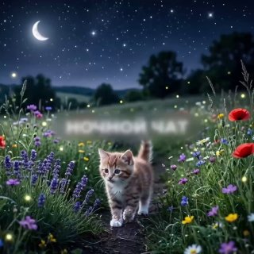

Это смертельное заболевание для собак, которое также называют псевдобешенством ➖ Ведомство официально связало гибель животных с этой партией препарата.…
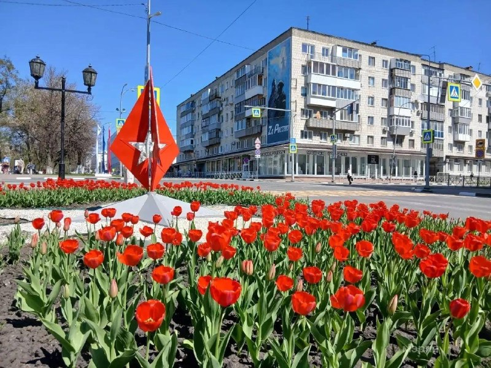
В ближайшие недели тюльпаны высадят на семи цветниках — весной вся эта красота зацветёт на 720 квадратах.…
Предлагали людям брать кредиты, а затем тут же заявлять о том, что стали жертвами телефонных обманщиков. После чего подавать на банкротство.…
Ничего по этому фильтру в ленте нет — показать все материалы.
Возник 13.09, пик 13.09 — сюжет держали 4 источника. Полная дуга — в недельнике.